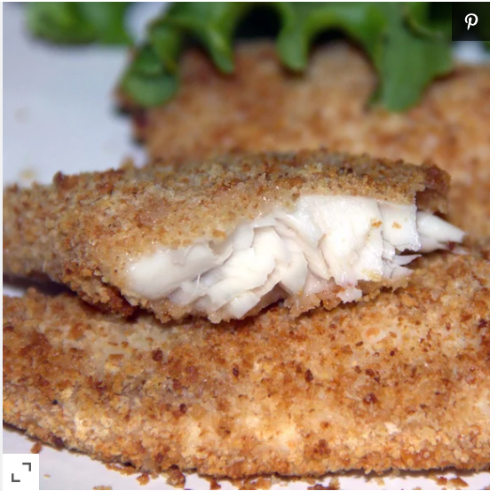

Air-Fried Crumbed Fish

Description
Crumbed fish is one of my favorite fried items, and this air-fried version of the recipe gives me great flavor without the fat.
Ingredients
- 1 cup dry bread crumbs
- ¼ cup vegetable oil
- 4 flounder fillets
- 1 egg, beaten
- 1 lemon, sliced
Steps
- Preheat an air fryer to 350 degrees F (180 degrees C).
- Mix bread crumbs and oil together in a bowl. Stir until mixture becomes loose and crumbly.
- Dip fish fillets into the egg; shake off any excess. Dip fillets into the bread crumb mixture; coat evenly and fully.
- Lay coated fillets gently in the preheated air fryer. Cook until fish flakes easily with a fork, about 12 minutes. Garnish with lemon slices.